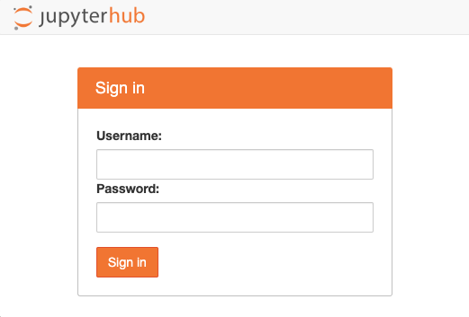
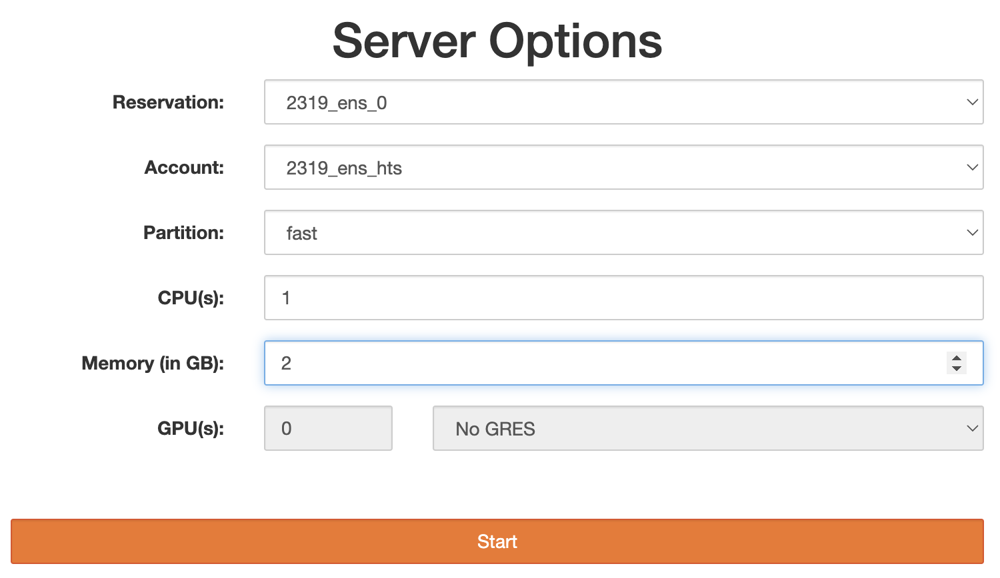
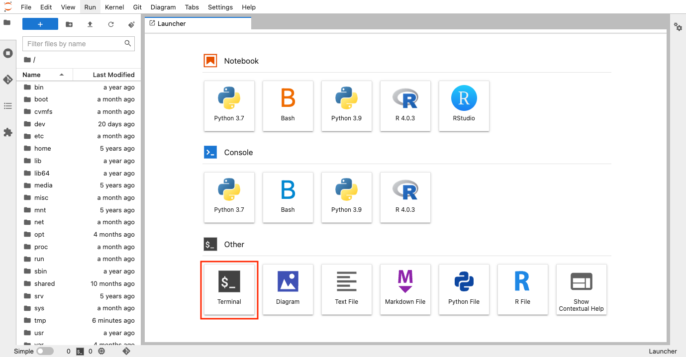
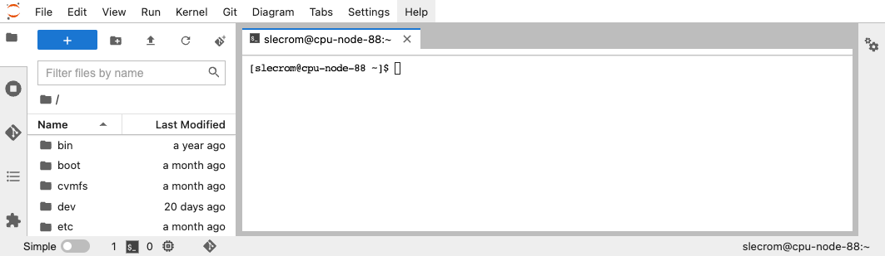
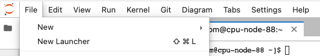
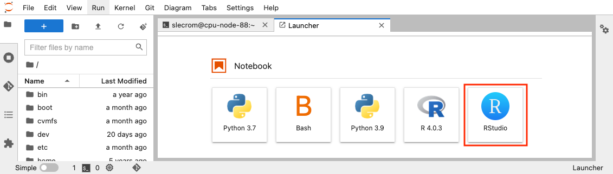
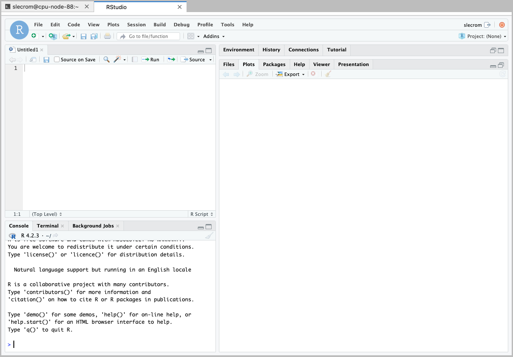

How to work with the IFB cluster
You're going to use JupyterHub, a web application that lets you create JupyterLab servers on the IFB cluster.
Sign in on IFB cluster JupyterHub
In a web browser, connect to https://jupyterhub.cluster.france-bioinformatique.fr/ and log in using your IFB username and password.

Bookmark this URL in your browser for easy retrieval.
Select your server options
On the following screen you can select the option used by our JupyterHub server during the practical. Two nodes have been booked for our training session on IFB server. To build your server on these nodes select the following options:
- Reservation: 2319_ens_0
- Partition: fast
- CPU: 1
- Memory: 2

Start a terminal session
Once your server has been launched, you will be taken to the application launcher page.

You can click on the "Terminal" tile in order to open a terminal window.

Launching an Rstudio environment
In the JupyterHub interface select "New launcher" in the "File" drop-down menu.

Click on "Rstudio" to start a new session.


You can get more information using the IFB-core Cluster documentation.